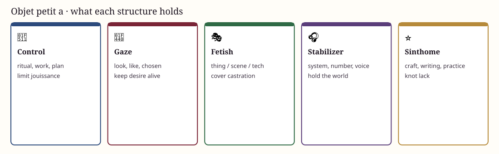

Leftover that makes us want
Objet petit a
Not an object we have: the leftover that makes us want. Gaze, voice, a scene, a nothing that glows.
After trauma, anxiety rises. Binding to an object is already a small solution. It can freeze as symptom or be reworked as sinthome.
